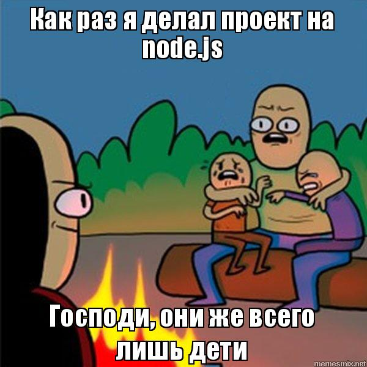
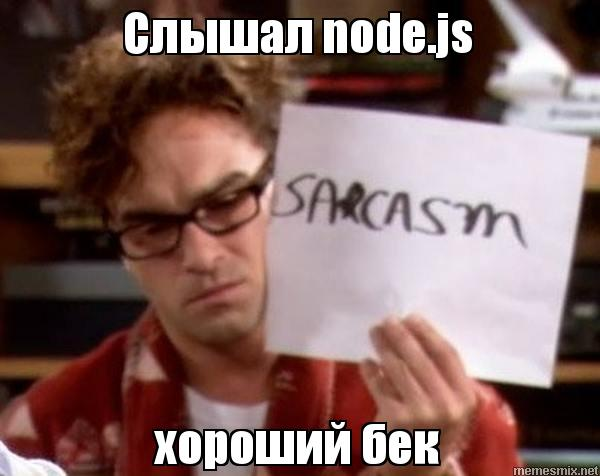
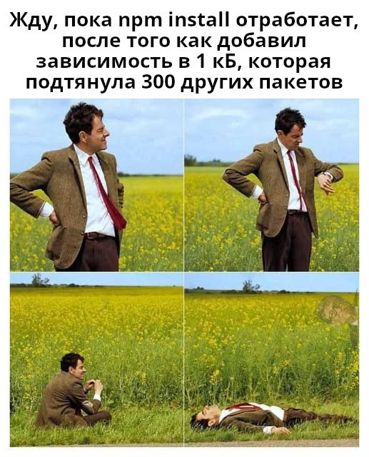
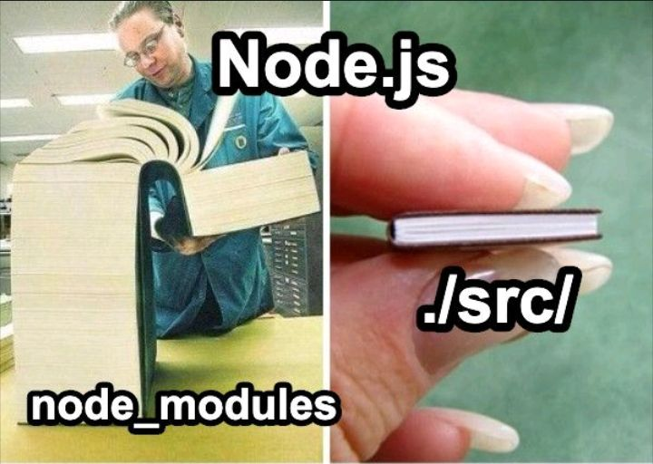
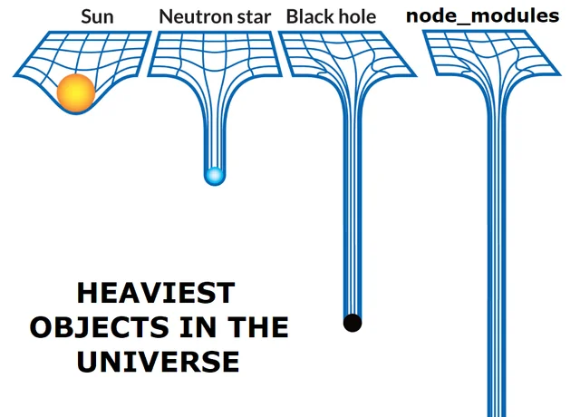

let/const, undefined vs nullextends, superВ Node используется ровно тот же JavaScript — без браузера.
node --version, npm --version
npm init -y — новый проект; npm init es6 -y — с ES-модулямиnpm install / --save-dev / -gnpm uninstall, npm updatenpx — запуск пакета без установки: npx cowsay
4_package_json/package.json
{
"name": "init_es6",
"version": "1.0.0",
"main": "index.js",
"type": "module",
"scripts": {
"start": "node index.js",
"dev": "nodemon index.js",
"test": "jest --passWithNoTests"
},
"dependencies": {
"express": "^5.1.0"
},
"devDependencies": {
"jest": "^30.2.0"
}
}
scripts — команды проекта: npm run dev, npm testdependencies vs devDependenciesutils/math.js (CommonJS)
module.exports = {
sum: (a, b) => a + b,
multiply: (a, b) => a * b
};
utils/math.js (ES6)
export function sum(a, b) {
return a + b;
}
export function multiply(a, b) {
return a * b;
}
ES6-модули включаются полем "type": "module" в package.json.
npm i -D jest + скрипты test/test:watch/test:coverage
tests/math.test.js
import * as math from '../src/utils';
import { describe, test, expect } from '@jest/globals';
describe('Math module', () => {
test('sums two numbers correctly', () => {
expect(math.sum(2, 3)).toBe(5);
});
test('multiplies two numbers correctly', () => {
expect(math.multiply(2, 3)).toBe(6);
});
test('sum handles negative numbers', () => {
expect(math.sum(-1, -2)).toBe(-3);
});
});
describe группирует, test — случай, expect(...).toBe(...) — проверкаsrc/index.js
import TelegramBot from 'node-telegram-bot-api';
import dotenv from 'dotenv';
dotenv.config();
const token = process.env.TELEGRAM_BOT_TOKEN;
const bot = new TelegramBot(token, { polling: true });
bot.onText(/\/start/, (msg) => {
bot.sendMessage(msg.chat.id, 'Привет! Я твой первый бот!');
});
bot.on('message', (msg) => {
if (msg.text !== '/start') {
bot.sendMessage(msg.chat.id, `Вы сказали: "${msg.text}"`);
}
});
Токен — через BotFather; хранить в .env, читать через dotenv.
nodemon — авто-перезапуск при изменении кода
import TelegramBot from 'node-telegram-bot-api';
jest.mock('node-telegram-bot-api'); // заменяем библиотеку моком
const mockSend = jest.fn();
TelegramBot.mockImplementation(() => ({
onText: jest.fn(),
on: jest.fn(),
sendMessage: mockSend
}));
test('бот отвечает на /start', async () => {
require('../src/index');
expect(TelegramBot).toHaveBeenCalledWith(expect.anything(),
{ polling: true });
});
mockResolvedValue — замок ответа промиса для async/awaitonText вызванnpm i -D eslint, npx eslint --init, --fixeslint.config.jssettings.json → source.fixAll.eslint
8_eslint/eslint.config.js
import js from "@eslint/js";
import globals from "globals";
import { defineConfig } from "eslint/config";
export default defineConfig([
{
files: ["**/*.{js,mjs,cjs}"],
plugins: { js },
extends: ["js/recommended"],
languageOptions: { globals: globals.node }
},
]);
Скрипты в package.json:
"lint": "eslint .", "lint:fix": "eslint . --fix"
Правила: indent, quotes, semi, no-unused-vars, no-console, prefer-const, eqeqeq.
start / devЭтот же процесс ждёт вас в React-проектах тем 8–12.